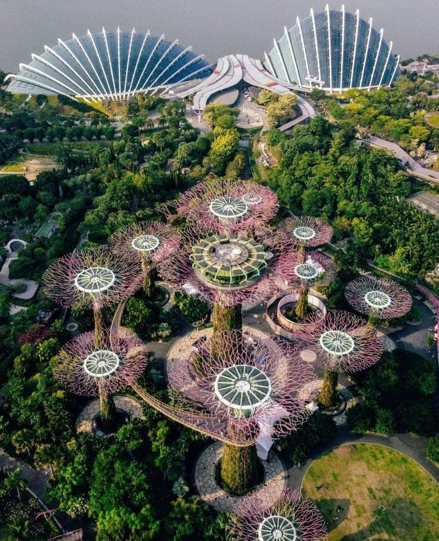

A testament to Singapore's commitment to sustainability, Gardens by the Bay is a breathtaking fusion of nature and technology. This horticultural wonderland showcases futuristic Supertrees, towering vertical gardens that come alive with a dazzling light and sound show at night. Explore the Cloud Forest and Flower Dome, where exotic flora from around the world thrives in controlled environments.Here are some of the attractions explained:
1.Supertree Grove:These iconic tree-like structures are the centerpiece of the gardens. They range in height from 25 to 50 meters and feature vertical gardens, providing a habitat for plants and flowers. At night, the Supertrees come alive with a stunning light and sound show called "Garden Rhapsody."
2.Cloud Forest:This cooled conservatory features a mountain covered in lush vegetation, waterfalls, and a mist cloud. Visitors can explore the Cloud Walk, a walkway that winds through the trees, and get a panoramic view of the gardens from the top of the mountain.
3.Flower Dome:This conservatory houses plants and flowers from flower fields around the world, such as the Mediterranean, South Africa, and Australia. Visitors can stroll through the different gardens and learn about the plants on display.
